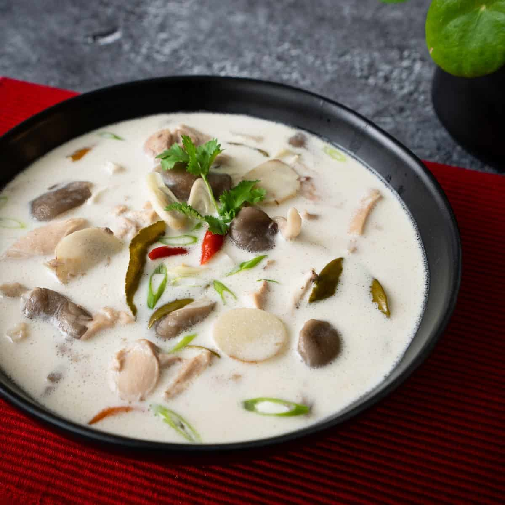

Tom Kha is a coconut milk based chicken soup. It uses Galangal, a root often used in Thai cooking, as well as Kaffir lime leaf, also known as Makrut in its original Thai. These herbs, as well as cilantro and lemongrass, are responsible for its distinctive flavor. Tom Kha is also known for its mushrooms as an essential part of the vegetables in the dish, as they absorb the flavor of the soup due to their spongy texture.
Despite the fact that Tom Kha is usually made with a chicken base, it can actually be made vegetarian very easily. You may also see different twists on the recipe from different Thai restaurants, as well as differing degrees of spice and amounts of herbs added. Please keep in mind that the lemongrass and galangal are not edible parts of the dish, so if you are eating this dish for the first time or have children who may choke, remember to take it out before serving.